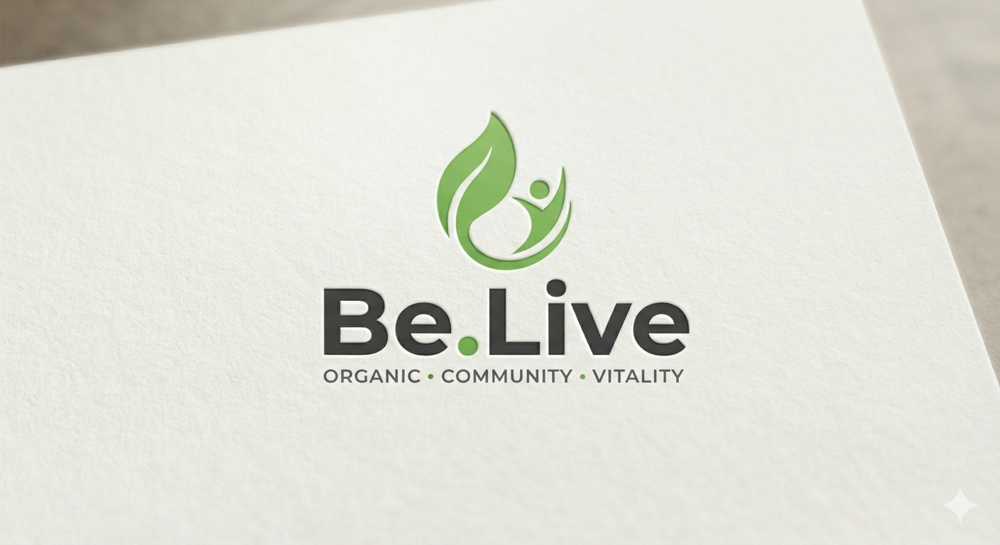

Our Philosophy
We believe human life is not separate from nature; it is a living relationship that needs attention, care, and wise framing.
Modern life often teaches us to chase optimization over meaning. But the most important questions are not always the loudest ones. They are the quiet ones: what do we really value, what nourishes us, and what kind of world are we building with our daily choices?
“The deepest changes begin not in systems, but in how we live, learn, and return to what is true.”
Be.Live is an invitation to look again at the essentials: healthy food, honest knowledge, local relationships, and a pace of living that allows attention to return.
This is not ideology. It is a practical philosophy: learn with humility, live with care, and build with patience.
Living Research
We are exploring food systems, ecology, trust, and local living through grounded observation and listening.
How food, trust, and daily habits shape the way we live.
→Community surveyA short look at how people decide what food feels trustworthy.
→From the House of Sahoo
SenseraDesigning a more conscious futuresensera.co.inA place for learning, experimenting, and building more resilient ways of living together.